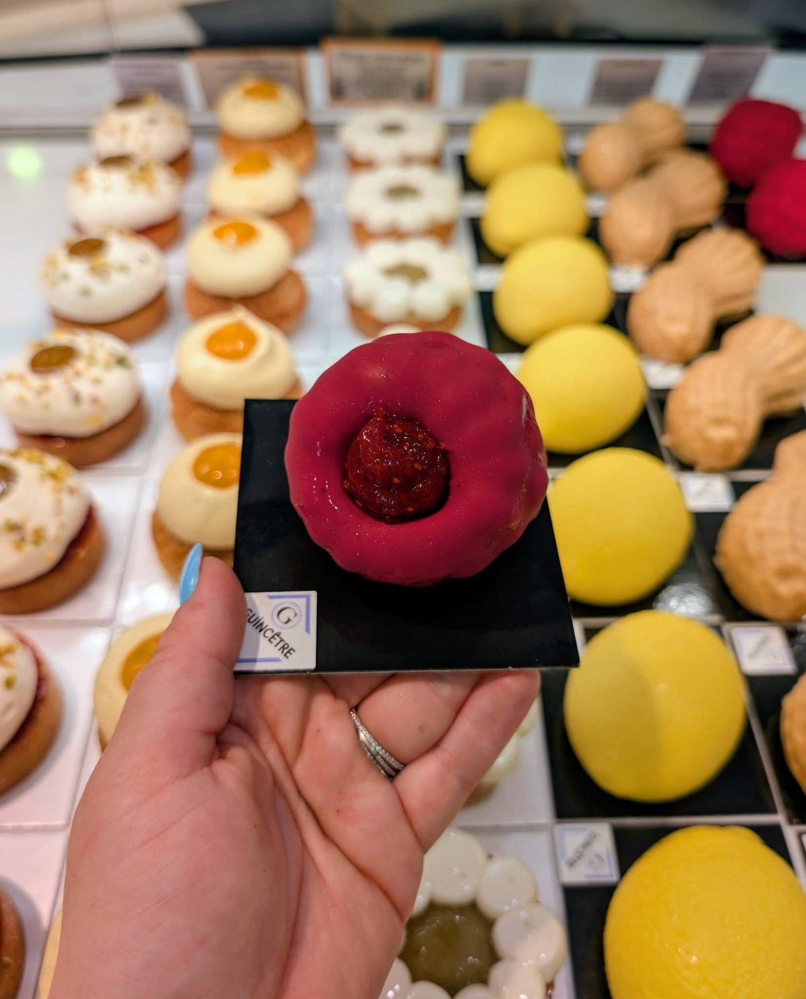
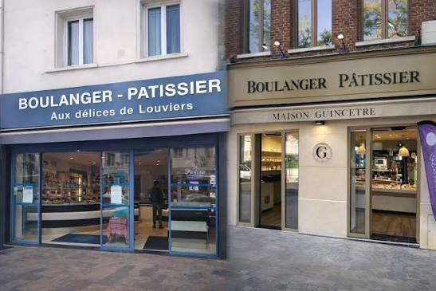

Rue du Maréchal Foch, la vitrine bleue d’Aux Délices de Louviers est un repère des gourmands. La maison a été fondée en 1996. Derrière, la famille Guincêtre : trois générations de boulangers et de pâtissiers, une finale nationale sur M6, et désormais une seconde boutique au Vaudreuil, la Maison Guincêtre.
Trois générations de passion boulangère
Anne et Franck Guincêtre, dont les noms s’affichent au-dessus de la vitrine, en ont fait une affaire de famille, aujourd’hui portée aussi par Maxime, le fils de Franck, pâtissier. La devise de la maison tient en une phrase : « une histoire de famille, de goût et de passion ».
Tout est fait sur place, chaque jour
Pains, viennoiseries, pâtisseries, traiteur : tout est préparé au laboratoire, avec des farines françaises et des ingrédients de saison, en circuit court dès que c’est possible. La maison résume ses engagements en trois mots : l’artisanat, « vrai et sans compromis » ; la qualité, « du goût à la présentation » ; et les produits locaux.
En vitrine, les baguettes côtoient le pain muesli et la focaccia ; les croissants, les brioches ; les tartes, les entremets et les éclairs. On y commande aussi les gâteaux d’anniversaire personnalisés, les petits fours et les cakes de voyage.

Finalistes de La Meilleure Boulangerie de France
En 2023, pour la dixième saison de l’émission de M6, Franck et Maxime Guincêtre ont représenté la Haute-Normandie. Le duo père et fils a remporté la sélection régionale et s’est qualifié pour la finale nationale, diffusée en mai 2023. « Le jury a aimé nos produits fétiches », résumait alors Maxime.
Là, on a un super duo, très original en plus. Il y a le père et le fils.
— Le jury de La Meilleure Boulangerie de France, M6, 2023Le jeudi, c’est éclairs
Chaque jeudi, sauf en août et en décembre, la boutique propose quatorze sortes d’éclairs : vanille, mousse au chocolat, caramel-popcorn, chocolat blanc et framboise, spéculoos, citron-yuzu… Pour cinq éclairs achetés, le sixième est offert.
La Maison Guincêtre, au Vaudreuil
La famille a ouvert une seconde adresse au 10 place du Général de Gaulle, au Vaudreuil : la Maison Guincêtre, « l’atelier gourmand, entre tradition et création ». Boutique et laboratoire à la fois, elle s’est fait une spécialité des wedding cakes, des gâteaux personnalisés et des pièces montées.

Aux Délices de Louviers
38 rue du Maréchal Foch, 27400 Louviers · du lundi au samedi de 6 h 30 à 19 h 45, le dimanche de 7 h 30 à 19 h, fermé le mercredi · 02 32 40 04 63
Maison Guincêtre : 10 place du Général de Gaulle, 27100 Le Vaudreuil · du mardi au samedi de 6 h 30 à 13 h 15 et de 15 h à 19 h 15, le dimanche de 7 h à 13 h, fermé le lundi.